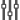
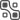
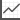

How to use VisiOmatic
The main window
The Figure below shows the main window of the VisiOmatic web interface in its default configuration.
Fig. 2 Snapshot of the Main VisiOmatic Window
The main window contains a "slippy map" carrying the current image layer and optional vector overlays, plus a series of widgets. One navigates through the image and its overlays by "dragging" the map to the desired position. On computers this is done by clicking and holding the left button while moving the mouse, or by using the keyboard arrow keys. On touch devices one must press and move a finger throughout the screen.
At the top left, two magnifier buttons can be used to zoom in () or out (). One can also zoom using the mouse wheel or the -/+ keys on computers, or with a pinch gesture on touch devices. The user can switch to/from full screen mode by clicking the button (third from the top). The button (last from the top) opens the Advanced Settings Menu.
{kind=link}
{kind=link}
{kind=link}
{kind=link}
The coordinates of the center of the current field of view (indicated by the cross-shaped reticle) are displayed at the top-right of the main window, in the Coordinate Pane. Depending on the configuration, a drop-down list allows the user to switch between equatorial (RA,Dec) and other types of coordinates, including image pixel coordinates.
Below the coordinate and pixel value displays, a Navigation Pane may be offered, offering a larger view of the current image, as well as the current field of view, represented by a shaded orange box.
The scale, as measured at the center of the main window, is displayed in the lower left corner.
The Coordinates Pane
The Coordinates Pane allows the user to:
check the central coordinates and the current FITS extension (for mosaics of detectors) of the current field of view.
pan to the given coordinates or to a given object
pan to a given detector for mosaic images stored as MEF files.
To move to specific coordinates or objects, simply click in the coordinates pane, and enter the desired coordinates or object name. VisiOmatic uses Simbad to parse the input coordinates and object names. According to the Simbad Query-by-Coordinates webpage, the following coordinates writings are allowed:
20 54 05.689 +37 01 17.3810:12:45.3-45:17:5015h17m-11d10m15h17+89d15275d11m15.6954s+17d59m59.876s12.34567h-17.87654d350.123456d-17.33333d350.123456 -17.33333
while the dictionary of nomenclature for object identifiers can be found at CDS.
The Pixel Value Pane
The Pixel Value Pane displays the value of the pixel at the center of the field of view in the current image channel.
The unit is defined by the content of the BUNIT FITS image keyword; if not found, VisiOmatic uses ADU (counts) by default.
A drop-down list at the left of the widget allows the user to select various value display options:
Raw: raw value.-Bkg: background-subtracted valueSB: surface brightness in instrumental mag.arcsec\(^{-2}\)SB-Bkg: background-subtracted surface brightness in instrumental mag.arcsec\(^{-2}\).
Note that the value of the background is assumed to be constant over the whole image, which may lead locally to significant inaccuracies.
{kind=link}
Advanced Settings
The Advanced Settings menu button gives access to a taskbar with seven tabs (in the default configuration), from top to bottom and as illustrated in Fig. 4:
 Channel Mixing, which allows the user to choose which image channels to use for display, color compositing, or animation.
Image Preferences, which gives the user control over the image brightness, contrast, color saturation, gamma correction and JPEG compression level. There is also a switch for inverting the color map.
 Catalog Overlays for superimposing multiple catalogs in vector form, e.g., the 2MASS Point Source Catalog [4] or the SDSS Photometric Catalog [5].
Region Overlays, for overlaying Points Of Interest (such as local catalogs) or any local vector data sets in GeoJSON format.
 Profile Overlays, for plotting image profiles and (pseudo-)spectral energy distributions from the full precision pixel values stored on the server.
Snapshots, for capturing snapshots of the current display or of the whole image.
Documentation, which opens a panel where any web page can be embedded, e.g., an online-manual.
{kind=link}
{kind=link}
{kind=link}
{kind=link}
{kind=link}
{kind=link}
{kind=link}
{kind=link}
Fig. 4 Snapshot of the Advanced Menu (emphasized at the left).
All dialogs use similar widgets. The values in numerical widgets may be entered directly or decreased/increased using the -/+ buttons. Note that the image is only updated when the buttons are released so that data exchanges between the server and the client remain within reasonable values.
Channel Mixing
The Channel Mixing panel has two modes, which can be selected using the radio buttons located at the top of the dialog: the Single Channel (monochromatic) mode, and the Color Mixing (composite) mode.
In Single Channel mode, one can:
Select an image channel for display
Select a color map for the current channel among a selection of four
Set the minimum and maximum channel levels
Play forward or backward an animation of the channel sequence at a given framerate
In Multi-Channel mode, one can:
Select an image channel to be included in the color mix
Set the color this channel contributes to the mix
Set the minimum and maximum channel levels
Click on a channel name in the active channel list to edit a channel contributing to the current mix, or click on the trashcan button to remove it.
Colors are linearly interpolated between the selected channels.
Fig. 5 Snapshots of the Channel Mixing panel in Single Channel mode (left) and Color Mixing mode (right).
Image Preferences
The Image Preference dialog gives access to global image display settings:
Color map inversion (negative mode)
Brightness (additive factor)
Contrast (scaling factor)
Color saturation: 0 for gray levels, >1 for exaggerating colors
Gamma correction: 2.2 for linear output on a properly calibrated monitor, higher values for compressing the dynamic range, lower values for expanding it
JPEG quality percentage. The lower the quality percentage, the more compressed the image and the more artifacts in the rendering.
{kind=link}
Fig. 6 Snapshot of the Image Preferences panel.
Note
Users with a low bandwidth can improve the reactivity of the display by setting a lower JPEG quality percentage.
Catalog Overlays
The Catalog Overlay dialog allows the user to download and overlay catalogs in the current field of view. The available list of catalogs and the rendering of catalog sources (marker, cross, circle with magnitude-dependent radius, ellipse, etc.) depends on client settings. In the current default interface all catalogs are queried from the VizieR service at CDS [6].
To query a catalog, move the map and adjust the zoom level to the desired field of view; choose the catalog from the drop-down catalog selector and an overlay color from the color selector, then click the "GO" button. After a few seconds a new overlay with the chosen color should appear, as well as a new entry in the active catalog list below the drop down selector. Each overlay may be turned off or on by clicking on the check-mark in the corresponding entry of the active catalog list, or simply discarded by clicking on the trashcan button.
Fig. 7 Snapshot of the Catalog Overlay panel.
Depending on the implementation in the client, sources may be clickable and have pop-up information windows attached. When several catalogs are displayed on screen, it may happen that symbols for a single source overlap, making it difficult to bring up the measurement for the chosen catalog. This problem can be solved by clicking on the chosen entry in the list of active catalogs, which will bring the symbols of the corresponding catalog to the front.
Region Overlays
The Region Overlay dialog allows the user to overlay Points/Regions Of Interest, such as local catalogs, detector footprints, etc. These POIs/ROIs may be clickable and have information attached for display in pop-up windows.
The Region Overlay selection mechanism is exactly the same as that of Catalog Overlays.
Profile Overlays
The Profile overlay dialog gives the user the possibility to extract pixel values directly from the scientific data. These data are unaffected by channel mixing, image scaling or compression.
The profile option extracts series of pixel values along lines of constant galactic longitude or latitude. The line color is pink by default and can be changed using the color picker. The line itself is positioned on the image by first dragging the map to the desired start coordinate, pressing the "START" button, and dragging the map to the desired end coordinate and pressing the "END" button. After some calculation, a window appears with a plot of the image profile along the selected line. In mono-channel mode, a single line is plotted that corresponds to the currently selected channel. In color mode, all active channels are plotted, with their channel mixing color. On devices equipped with a mouse one can zoom inside the plots by clicking with the left button and selecting the zoom region. Double-click to zoom out. The plot window can be closed by clicking/touching the small cross in the upper right corner, and reopened at any time by clicking on the line.
The spectrum option, as its name implied extracts pixel data along the channel axis at a given position. The position is selected by dragging the map to the desired coordinate and clicking on the "Go" button. A circle marker appears with the color that was selected using the color picker (purple by default). After some calculation, a window pops out with the "spectrum" of pixel values at the selected coordinate. Note that the ordering of pixel values follows that of the channels in the data cube.
Documentation panel
Clicking on the symbol (which may be located at the bottom of the taskbar) brings up the online documentation panel. A navigation bar is located at the bottom of the panel to facilitate browsing through the provided documentation or website sections and come back to the main page. Finally, a download button (PDF Symbol ) located at the bottom right of the Manual Pane may be present to allow the user saving an entire manual as a PDF file for offline reading.
{kind=link}